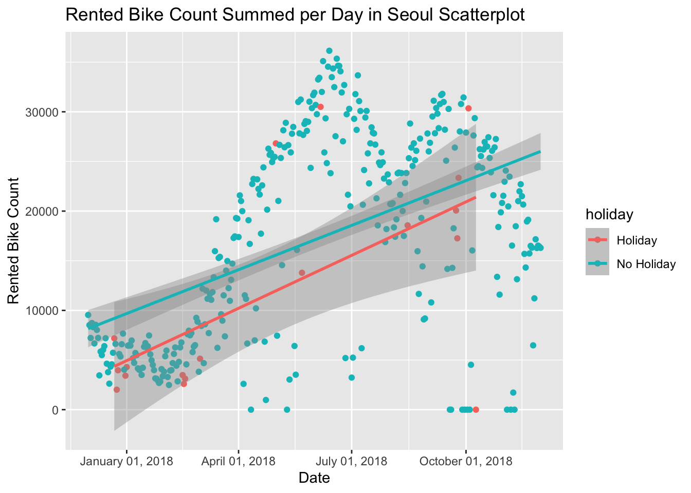
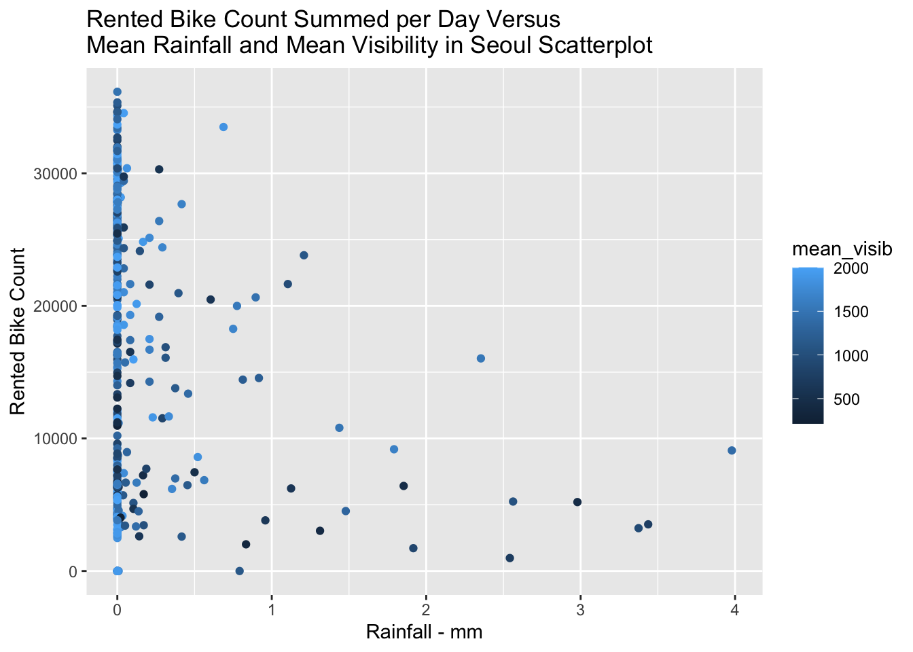
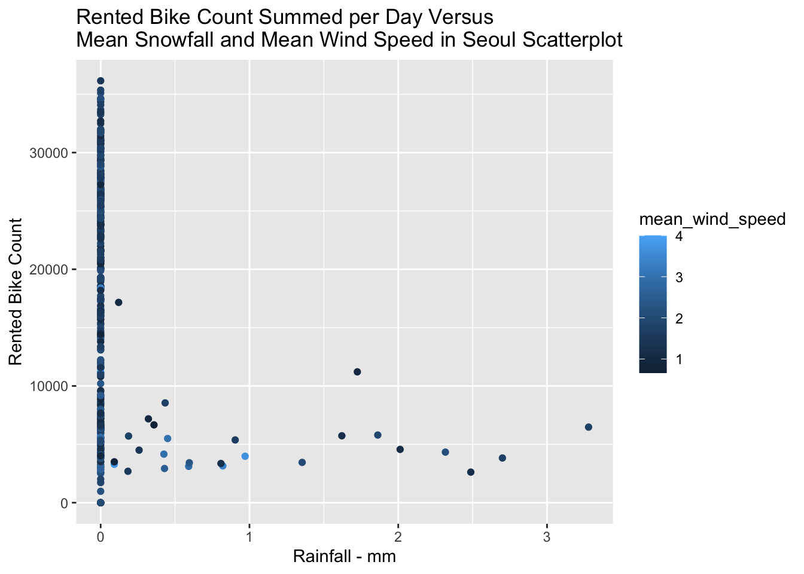
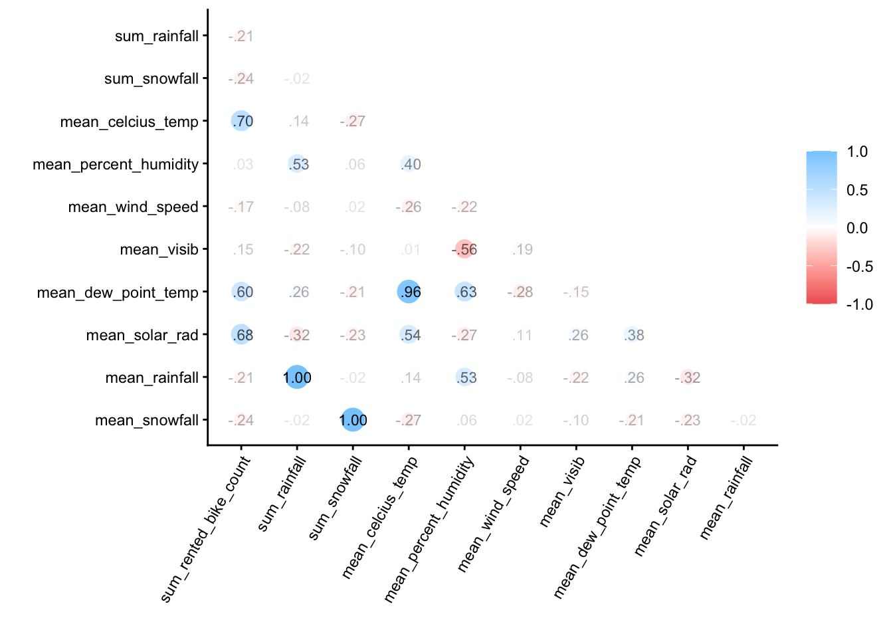
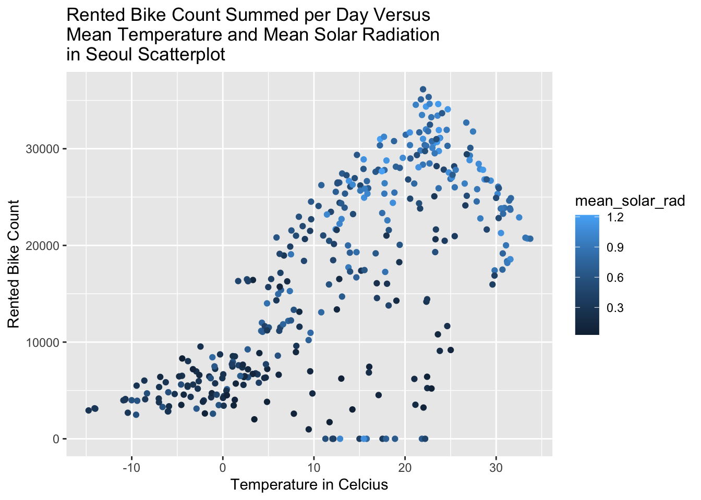
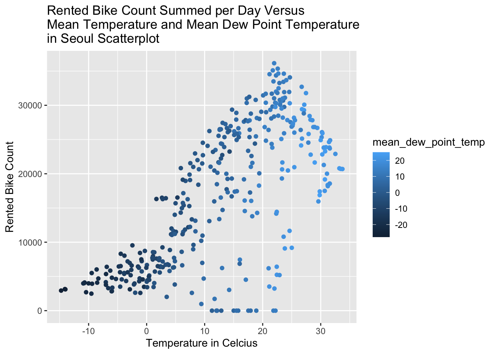
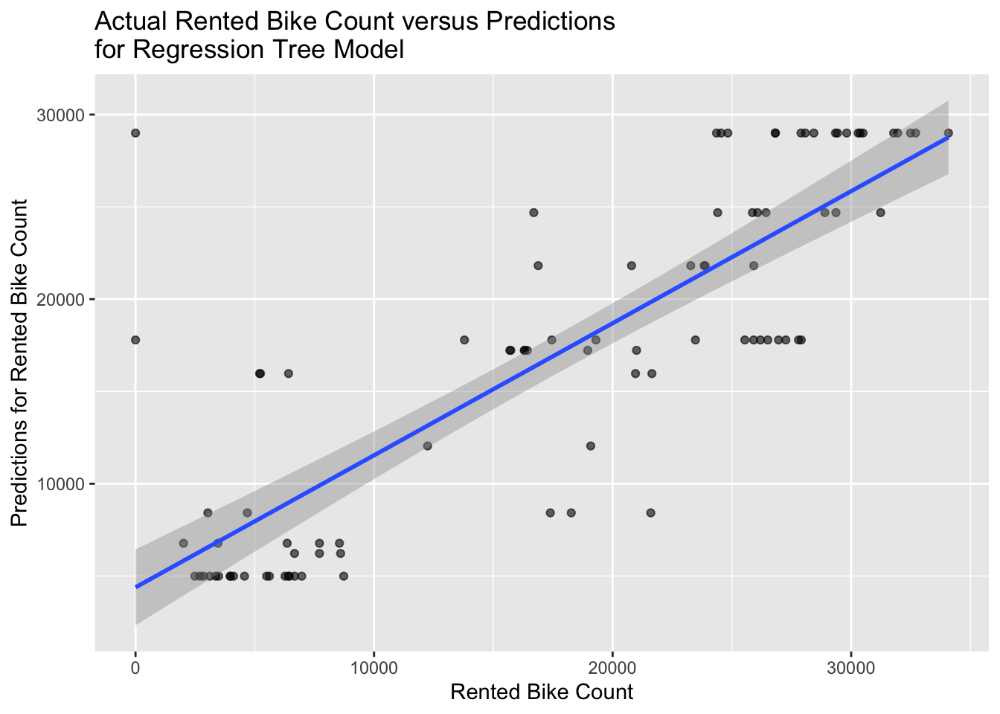
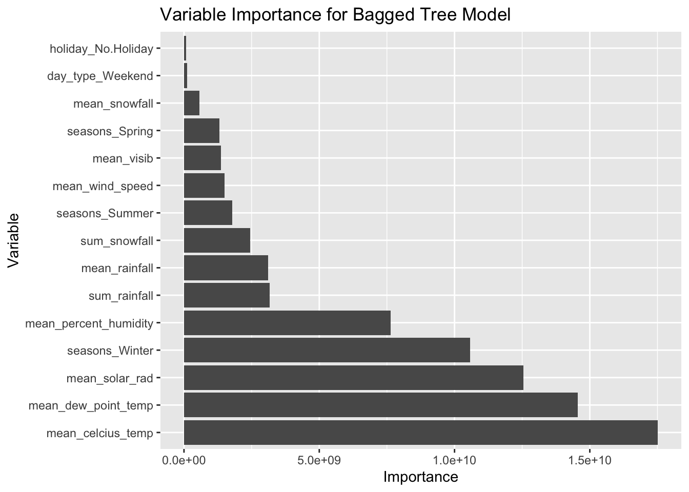
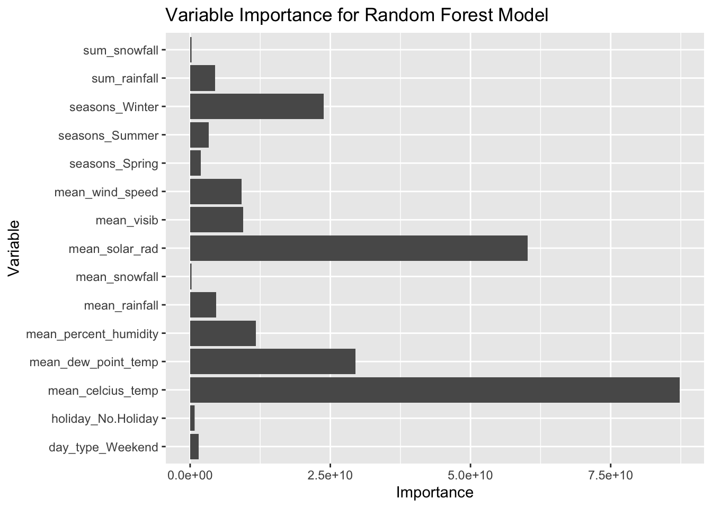

Homework 9 Modeling Practice - Continuation of Homework 8
Author
Powell Braddock, ST 558
Homework 8 Portion
In this assignment, we are looking at the Seoul Bike Data from the UCI Machine Learning Repository. We are looking at the following variables of interest:
• Date : day/month/year
• Rented Bike count - Count of bikes rented at each hour
• Hour - Hour of the day
• Temperature-Temperature in Celsius
• Humidity - %
• Windspeed - m/s
• Visibility - 10m
• Dew point temperature - Celsius
• Solar radiation - MJ/m2
• Rainfall - mm
• Snowfall - cm
• Seasons - Winter, Spring, Summer, Autumn
• Holiday - Holiday/No holiday
• Functional Day - NoFunc(Non Functional Hours), Fun(Functional hours)
Reading in the Data
Let’s look at the data using read_csv. We have to use the locale encoding of latin1 because of the degree symbol for temperature variables.
library(tidyverse)
── Attaching core tidyverse packages ──────────────────────── tidyverse 2.0.0 ──
✔ dplyr 1.1.4 ✔ readr 2.1.5
✔ forcats 1.0.1 ✔ stringr 1.5.2
✔ ggplot2 4.0.0 ✔ tibble 3.3.0
✔ lubridate 1.9.4 ✔ tidyr 1.3.1
✔ purrr 1.1.0
── Conflicts ────────────────────────────────────────── tidyverse_conflicts() ──
✖ dplyr::filter() masks stats::filter()
✖ dplyr::lag() masks stats::lag()
ℹ Use the conflicted package (<http://conflicted.r-lib.org/>) to force all conflicts to become errors
#originally got an error: what I think came from the degree symbol in one of the attributes. the wild internet provided the locale = latin1 solution!seoul_bike_data <-read_csv('https://www4.stat.ncsu.edu/~online/datasets/SeoulBikeData.csv', locale =locale(encoding ='latin1'))
Rows: 8760 Columns: 14
── Column specification ────────────────────────────────────────────────────────
Delimiter: ","
chr (4): Date, Seasons, Holiday, Functioning Day
dbl (10): Rented Bike Count, Hour, Temperature(°C), Humidity(%), Wind speed ...
ℹ Use `spec()` to retrieve the full column specification for this data.
ℹ Specify the column types or set `show_col_types = FALSE` to quiet this message.
Now we must check the data… I’m starting with check for missingness: looks like we have na_counts of zero across the board for all columns! Whoop whoop whoop!
Now, we must check the column types and the values within the columns to make sure they make sense. I’m using the psych package’s describe() for basic summary statistics for numeric columns. I’m checking the unique values for the categorical variables using unique().
library(psych)
Attaching package: 'psych'
The following objects are masked from 'package:ggplot2':
%+%, alpha
Now, we want to turn the character variables (Seasons, Holiday, and Functioning Day) into factors (remember those unique values from before?). We can rename all the variables to be lower snake case too.
seoul_bike_data<-seoul_bike_data |>mutate(Seasons =as.factor(Seasons),Holiday =as.factor(Holiday),`Functioning Day`=as.factor(`Functioning Day`)) |>rename('date'='Date','rented_bike_count'='Rented Bike Count','hour'='Hour','celcius_temp'='Temperature(°C)','percent_humidity'='Humidity(%)','wind_speed'='Wind speed (m/s)','visib'='Visibility (10m)','dew_point_temp'='Dew point temperature(°C)','solar_rad'='Solar Radiation (MJ/m2)','rainfall'='Rainfall(mm)','snowfall'='Snowfall (cm)','seasons'='Seasons','holiday'='Holiday','function_day'='Functioning Day')
Onto creating summary statistics. The first contingency table is the data grouped by Functioning Day across Rented Bike Count with descriptive summaries of mean, median, variance, standard deviation, and interquartile range.
Wow! When functioning day is ‘no’, there were no bike rentals. Bike rentals only occurred on functioning days of ‘yes’.
This time, we will only look at functioning days of ‘yes’ where we summarize grouped by seasons and holiday variables. All four seasons have rented bike counts associated with them.
Now let’s group across date, seasons, and holiday variables for the sums of rented bike count, rainfall, and snowfall and the averages of the weather variables.
`summarise()` has grouped output by 'date', 'seasons'. You can override using
the `.groups` argument.
new_bike_data
# A tibble: 365 × 14
# Groups: date, seasons [365]
date seasons holiday sum_rented_bike_count sum_rainfall sum_snowfall
<date> <fct> <fct> <dbl> <dbl> <dbl>
1 2018-01-01 Winter Holiday 4290 0 0
2 2018-02-01 Winter No Holiday 5377 0 21.7
3 2018-03-01 Spring Holiday 5132 2.5 0
4 2018-04-01 Spring No Holiday 17388 0 0
5 2018-05-01 Spring Holiday 26820 0 0
6 2018-06-01 Summer No Holiday 31928 0 0
7 2018-07-01 Summer No Holiday 3231 81 0
8 2018-08-01 Summer No Holiday 20712 0 0
9 2018-09-01 Autumn No Holiday 26010 0 0
10 2018-10-01 Autumn No Holiday 27909 0 0
# ℹ 355 more rows
# ℹ 8 more variables: mean_celcius_temp <dbl>, mean_percent_humidity <dbl>,
# mean_wind_speed <dbl>, mean_visib <dbl>, mean_dew_point_temp <dbl>,
# mean_solar_rad <dbl>, mean_rainfall <dbl>, mean_snowfall <dbl>
Now let’s use this data to recreate those basic summary statistics and then create some plots to explore relationships.
First, we will create a contingency table of seasons and holiday variables. Most rented bike counts occurred on ‘not’ holidays. The highest count of rentals is in the summer for ‘not’ holidays and winter for holidays.
Now to plot… Let’s look at the rented bike count sums by date and holiday! Both the scatterplot and the overlapping holiday linear regression plots show an increase in the rental counts as the year goes on.
ggplot(new_bike_data, aes(x=date, y=sum_rented_bike_count, color=holiday)) +geom_point() +geom_smooth(method='lm') +scale_x_date(date_labels ="%B %d, %Y") +labs(title='Rented Bike Count Summed per Day in Seoul Scatterplot', x='Date',y='Rented Bike Count')
`geom_smooth()` using formula = 'y ~ x'

ggplot(new_bike_data, aes(x=mean_rainfall, y=sum_rented_bike_count, color=mean_visib)) +geom_point() +labs(title='Rented Bike Count Summed per Day Versus \nMean Rainfall and Mean Visibility in Seoul Scatterplot', x='Rainfall - mm',y='Rented Bike Count')

Now let’s check where the x axis is mean snowfall and mean wind speed. The majority of bike rentals occur when there is no snowfall and low wind speed. There are a few dates with snowfall and rentals, but they mostly have lower wind speeds.
ggplot(new_bike_data, aes(x=mean_snowfall, y=sum_rented_bike_count, color=mean_wind_speed)) +geom_point() +labs(title='Rented Bike Count Summed per Day Versus \nMean Snowfall and Mean Wind Speed in Seoul Scatterplot', x='Rainfall - mm',y='Rented Bike Count')

OOOh, a correlation matrix of the numeric variables we defined before.
As expected, mean rainfall and sum rainfall are very correlated, as well as mean snowfall and sum snowfall.
Mean Celcius Temp and Mean Dew Point Temp are also super correlated (0.96).
The most correlated variable with the Sum Rented Bike Count is Mean Celcius Temp. Let’s look at this and the next most correlated variable: solar radiation!
cor_matrix <-correlate(num_vars)
Non-numeric variables removed from input: `date`, and `seasons`
Correlation computed with
• Method: 'pearson'
• Missing treated using: 'pairwise.complete.obs'
Warning: `aes_string()` was deprecated in ggplot2 3.0.0.
ℹ Please use tidy evaluation idioms with `aes()`.
ℹ See also `vignette("ggplot2-in-packages")` for more information.
ℹ The deprecated feature was likely used in the corrr package.
Please report the issue at <https://github.com/tidymodels/corrr/issues>.

This is certainly a correlated relationship! The higher temperature has higher rental counts and higher solar radiation. Who would have thought?
ggplot(new_bike_data, aes(x=mean_celcius_temp, y=sum_rented_bike_count, color=mean_solar_rad)) +geom_point() +labs(title='Rented Bike Count Summed per Day Versus \nMean Temperature and Mean Solar Radiation \nin Seoul Scatterplot', x='Temperature in Celcius',y='Rented Bike Count')

Makes sense, because dew point temperature looks to be correlated as well.
ggplot(new_bike_data, aes(x=mean_celcius_temp, y=sum_rented_bike_count, color=mean_dew_point_temp)) +geom_point() +labs(title='Rented Bike Count Summed per Day Versus \nMean Temperature and Mean Dew Point Temperature \nin Seoul Scatterplot', x='Temperature in Celcius',y='Rented Bike Count')

Split the Data
Here, we can use functions from tidymodels to split the data into a training and test set (75/25 split). By using the strata argument, we can stratify the split on the seasons variable.
# A tibble: 273 × 14
# Groups: date, seasons [273]
date seasons holiday sum_rented_bike_count sum_rainfall sum_snowfall
<date> <fct> <fct> <dbl> <dbl> <dbl>
1 2018-09-01 Autumn No Holiday 26010 0 0
2 2018-10-01 Autumn No Holiday 27909 0 0
3 2018-11-01 Autumn No Holiday 22964 0 0
4 2018-09-02 Autumn No Holiday 26881 0 0
5 2018-10-02 Autumn No Holiday 0 0 0
6 2018-09-03 Autumn No Holiday 10802 34.5 0
7 2018-10-03 Autumn Holiday 30349 0 0
8 2018-09-04 Autumn No Holiday 29529 0 0
9 2018-10-04 Autumn No Holiday 0 0 0
10 2018-11-05 Autumn No Holiday 23472 0 0
# ℹ 263 more rows
# ℹ 8 more variables: mean_celcius_temp <dbl>, mean_percent_humidity <dbl>,
# mean_wind_speed <dbl>, mean_visib <dbl>, mean_dew_point_temp <dbl>,
# mean_solar_rad <dbl>, mean_rainfall <dbl>, mean_snowfall <dbl>
seoul_test <-testing(seoul_data)seoul_test
# A tibble: 92 × 14
# Groups: date, seasons [92]
date seasons holiday sum_rented_bike_count sum_rainfall sum_snowfall
<date> <fct> <fct> <dbl> <dbl> <dbl>
1 2018-04-01 Spring No Holiday 17388 0 0
2 2018-07-01 Summer No Holiday 3231 81 0
3 2018-04-02 Spring No Holiday 21585 0 0
4 2018-05-02 Spring No Holiday 7448 12 0
5 2018-11-02 Autumn No Holiday 24077 0 0
6 2017-12-02 Winter No Holiday 8523 0 0
7 2018-06-03 Summer No Holiday 29761 0 0
8 2018-11-03 Autumn No Holiday 0 0 0
9 2018-11-04 Autumn No Holiday 20471 0 0
10 2017-12-04 Winter No Holiday 8729 0.1 0
# ℹ 82 more rows
# ℹ 8 more variables: mean_celcius_temp <dbl>, mean_percent_humidity <dbl>,
# mean_wind_speed <dbl>, mean_visib <dbl>, mean_dew_point_temp <dbl>,
# mean_solar_rad <dbl>, mean_rainfall <dbl>, mean_snowfall <dbl>
Now we can look further into the training set and create a 10 fold CV split.
nrow(seoul_train)
[1] 273
size_fold <-floor(nrow(seoul_train)/10)size_fold
[1] 27
set.seed(8)random_indices <-sample(1:nrow(seoul_train), size =nrow(seoul_train), replace =FALSE)#see the random reorderinghead(random_indices)
[1] 183 226 79 12 119 170
#create a list to save our folds infolds <-list()#now cycle through our random indices vector and take the appropriate observations to each fold#you may want to set i to 1 and run the arguments to from and to in the seq() function#change i to 2 and do the same thing to see how this worksfor(i in1:10){if (i <10) { fold_index <-seq(from = (i-1)*size_fold +1, to = i*size_fold, by =1) folds[[i]] <- seoul_train[random_indices[fold_index], ] } else { #for i = 10 we need to have 1 more observation fold_index <-seq(from = (i-1)*size_fold +1, to =length(random_indices), by =1) folds[[i]] <- seoul_train[random_indices[fold_index], ] }}folds[[1]]
# A tibble: 27 × 14
# Groups: date, seasons [27]
date seasons holiday sum_rented_bike_count sum_rainfall sum_snowfall
<date> <fct> <fct> <dbl> <dbl> <dbl>
1 2018-06-21 Summer No Holiday 34621 0 0
2 2018-01-10 Winter No Holiday 4161 0.8 10.2
3 2018-03-07 Spring No Holiday 11170 0 0
4 2018-09-07 Autumn No Holiday 30381 1.5 0
5 2018-05-23 Spring No Holiday 27674 10 0
6 2018-07-14 Summer No Holiday 25814 0 0
7 2018-02-12 Winter No Holiday 4813 0 0
8 2018-01-20 Winter No Holiday 5576 0 0
9 2018-01-22 Winter No Holiday 4503 3.3 6.2
10 2018-01-07 Winter No Holiday 4714 0 0
# ℹ 17 more rows
# ℹ 8 more variables: mean_celcius_temp <dbl>, mean_percent_humidity <dbl>,
# mean_wind_speed <dbl>, mean_visib <dbl>, mean_dew_point_temp <dbl>,
# mean_solar_rad <dbl>, mean_rainfall <dbl>, mean_snowfall <dbl>
folds[[2]]
# A tibble: 27 × 14
# Groups: date, seasons [27]
date seasons holiday sum_rented_bike_count sum_rainfall sum_snowfall
<date> <fct> <fct> <dbl> <dbl> <dbl>
1 2018-03-25 Spring No Holiday 10963 0 0
2 2018-10-29 Autumn No Holiday 19877 0 0
3 2018-11-22 Autumn No Holiday 16496 0 0
4 2018-06-06 Summer Holiday 30498 0 0
5 2018-07-23 Summer No Holiday 24890 0 0
6 2018-04-09 Spring No Holiday 19082 0 0
7 2017-12-16 Winter No Holiday 4632 0 0
8 2018-05-14 Spring No Holiday 27793 0 0
9 2018-04-24 Spring No Holiday 20144 3 0
10 2018-01-11 Winter No Holiday 4017 0 0
# ℹ 17 more rows
# ℹ 8 more variables: mean_celcius_temp <dbl>, mean_percent_humidity <dbl>,
# mean_wind_speed <dbl>, mean_visib <dbl>, mean_dew_point_temp <dbl>,
# mean_solar_rad <dbl>, mean_rainfall <dbl>, mean_snowfall <dbl>
First, let’s create some recipes for our different models. For the 1st recipe: we’re ignoring the date variable for modeling (day_type) and removing it after we create a weekday/weekend (factor) variable. We can use step_normalize to standardize the numeric variables since their scales are pretty different and create dummy variables for the seasons, holiday, and our new day type variable using step_dummy.
• Centering and scaling for: all_numeric_predictors()
• Variables removed: day_name
For the 2nd recipe we are beginning with the same steps as before, but also adding in interactions between seasons and holiday, seasons and temp, temp and rainfall.
# A tibble: 3 × 4
Model mean n std_err
<chr> <dbl> <int> <dbl>
1 Model 1 5265. 10 353.
2 Model 2 4555. 10 449.
3 Model 3 4466. 10 460.
Model 1 is the ‘best’ model, so let’s fit the model to the entire training data set. The 2x4 tibble is the computed RMSE (and RSQ) metric on the test set.
The final model is fit on the entire training set and its coefficient table is the final displayed tibble (using extract_fit_parsnip() and tidy()).
I would be interested to learn more about why the p value of mean_solar_rad is so small, followed by rainfall and wind speed.
Overall, interesting assignment!
Homework 9 Begins Here
We will use the first recipe (seoul_train_rec_1) from homework 8 with no quadratics nor interactions to tune our LASSO Model. Let’s use the glmnet engine and the linear_reg function with a mixture of 1 (specifies LASSO instead of Elastic Net) and an opportunity to tune the penalty with a resampling method.
Now we can compare the chosen model on the test set using last_fit() and see the differences between our MLR model from Homework 8 and this LASSO model. It appears that the MLR Model outperforms the LASSO Model slightly.
# A tibble: 2 × 4
.metric .estimator .estimate .config
<chr> <chr> <dbl> <chr>
1 rmse standard 7071. pre0_mod0_post0
2 rsq standard 0.556 pre0_mod0_post0
Let’s check out the RMSE of the model when predicting on a new set of data: the test data. That’s the same RMSE as on the combined data. Let’s confirm and ‘finalize’ that model using finalize_workflow and collect metrics on it.
# A tibble: 2 × 4
.metric .estimator .estimate .config
<chr> <chr> <dbl> <chr>
1 rmse standard 7071. pre0_mod0_post0
2 mae standard 4821. pre0_mod0_post0
To tuning a Regression Tree model…
We can use decision_tree from the tree package this time, with the rpart engine specified for regression. Let’s tune for the tree_depth and cost_complexity and follow similar steps to the LASSO model, using the recipe from homework 8.
# A tibble: 100 × 8
cost_complexity tree_depth .metric .estimator mean n std_err .config
<dbl> <int> <chr> <chr> <dbl> <int> <dbl> <chr>
1 0.0000000001 1 mae standard 5648. 10 401. pre0_mod01…
2 0.0000000001 1 rmse standard 7365. 10 512. pre0_mod01…
3 0.0000000001 4 mae standard 3759. 10 231. pre0_mod02…
4 0.0000000001 4 rmse standard 5451. 10 462. pre0_mod02…
5 0.0000000001 8 mae standard 3754. 10 252. pre0_mod03…
6 0.0000000001 8 rmse standard 5448. 10 438. pre0_mod03…
7 0.0000000001 11 mae standard 3754. 10 252. pre0_mod04…
8 0.0000000001 11 rmse standard 5448. 10 438. pre0_mod04…
9 0.0000000001 15 mae standard 3754. 10 252. pre0_mod05…
10 0.0000000001 15 rmse standard 5448. 10 438. pre0_mod05…
# ℹ 90 more rows
Our best tree fit selected with the RMSE in mind has a cost complexity of 0.001 and a tree depth of 4. We can finalize that workflow and plot it to a tree plot! So fun.
# A tibble: 100 × 8
cost_complexity tree_depth .metric .estimator mean n std_err .config
<dbl> <int> <chr> <chr> <dbl> <int> <dbl> <chr>
1 0.0000000001 15 mae standard 3146. 10 191. pre0_mod05…
2 0.00001 8 mae standard 3166. 10 207. pre0_mod28…
3 0.00001 11 mae standard 3167. 10 202. pre0_mod29…
4 0.00001 15 mae standard 3176. 10 211. pre0_mod30…
5 0.00000001 8 mae standard 3186. 10 220. pre0_mod13…
6 0.000001 8 mae standard 3188. 10 201. pre0_mod23…
7 0.001 8 mae standard 3195. 10 204. pre0_mod38…
8 0.000001 15 mae standard 3198. 10 166. pre0_mod25…
9 0.0001 15 mae standard 3200. 10 191. pre0_mod35…
10 0.00000001 11 mae standard 3226. 10 203. pre0_mod14…
# ℹ 90 more rows
[[1]]
# A tibble: 2 × 4
.metric .estimator .estimate .config
<chr> <chr> <dbl> <chr>
1 rmse standard 6483. pre0_mod0_post0
2 mae standard 3930. pre0_mod0_post0
Finally, a tuned Random Forest model: it uses the library ranger and rand_forest to tune mtry and trees. Let’s check out the comparisons between the models below to learn more!
Each of these models are fit and tuned on the training set. The best model from each family of models is then fit it to the entire training data set to see how it predicts on the test set.
All final model’s RMSE and MAE are shown in the table below. The Random Forest model has the lowest RMSE and MAE, which would make it my choice for the ‘best’ model for predicting the bike rentals in Seoul. The second ‘best’ model would be the Bagged Tree model, with the closest RMSE and MAE values.
# A tibble: 10 × 5
Model .metric .estimator .estimate .config
<chr> <chr> <chr> <dbl> <chr>
1 MLR rmse standard 7068. pre0_mod0_post0
2 MLR mae standard 4801. pre0_mod0_post0
3 LASSO rmse standard 7071. pre0_mod0_post0
4 LASSO mae standard 4821. pre0_mod0_post0
5 TREE rmse standard 7310. pre0_mod0_post0
6 TREE mae standard 4649. pre0_mod0_post0
7 BAG rmse standard 6483. pre0_mod0_post0
8 BAG mae standard 3930. pre0_mod0_post0
9 RANDOM FOREST rmse standard 6372. pre0_mod0_post0
10 RANDOM FOREST mae standard 3577. pre0_mod0_post0
Below are the extracted final model fits for each type, followed by a summary of each model.
The MLR model’s final coefficient table:
best_mod_fit
# Resampling results
# Manual resampling
# A tibble: 1 × 6
splits id .metrics .notes .predictions .workflow
<list> <chr> <list> <list> <list> <list>
1 <split [273/92]> train/test split <tibble> <tibble> <tibble> <workflow>
There were issues with some computations:
- Warning(s) x1: prediction from rank-deficient fit; consider predict(., rankdefic...
Run `show_notes(.Last.tune.result)` for more information.
According to this table of coefficients, the LASSO model perceives the solar radiation and dew point temperature to have the biggest influence on the accuracy of the prediction.
The Regression Tree model’s plot of the final fit:
tree_preds |>ggplot(aes(x = sum_rented_bike_count, y=.pred)) +geom_point(alpha =0.6) +geom_smooth(method='lm')+labs(title='Actual Rented Bike Count versus Predictions \nfor Regression Tree Model', x='Rented Bike Count', y ='Predictions for Rented Bike Count')
`geom_smooth()` using formula = 'y ~ x'

The Regression Tree model shows a positive relationship between the actual rented bike count and the predicted rented bike count, shown by the blue indicator line. There are obvious visual outliers that prevent this line from having a slope of 1.
bag_final_model$imp |>mutate(term =factor(term, levels = term)) |>ggplot(aes(x = term, y = value)) +geom_bar(stat ="identity") +coord_flip()+labs(title='Variable Importance for Bagged Tree Model', x='Variable', y='Importance')

Looks like the temperature, solar radiation, and the dew point temperature were deemed the ‘most important’ by the Bagged tree model, which aligns with the results we anticipated in the correlation matrix from before. Snowfall, holiday/non-holiday, and weekday/weekend were not very relevant variables to the model.
Now, let’s break down the Random Forest model with a function to extract the fit to a control grid, then resample the fit using that control grid.
get_rand_for_importance <-function(x) { x |>extract_fit_parsnip() |> vip::vi()}ctrl_imp <-control_grid(extract = get_rand_for_importance)cells_resampling <- rand_for_final_wkf |>fit_resamples(seoul_10_fold, control = ctrl_imp)cells_resampling
The random forest model’s variable importance plot:
ggplot(cells_resampling_2, aes(x=Variable, y=Importance)) +geom_bar(stat ='identity')+labs(title='Variable Importance for Random Forest Model', x='Variable', y='Importance') +coord_flip()

Once again, the Random Forest Model dictates the high importance of the temperature, solar radiation, dew point temperature, closely followed by the season being winter! What a cool analysis.
For the overall best model, the random forest model, here’s the fit for the entire data set!